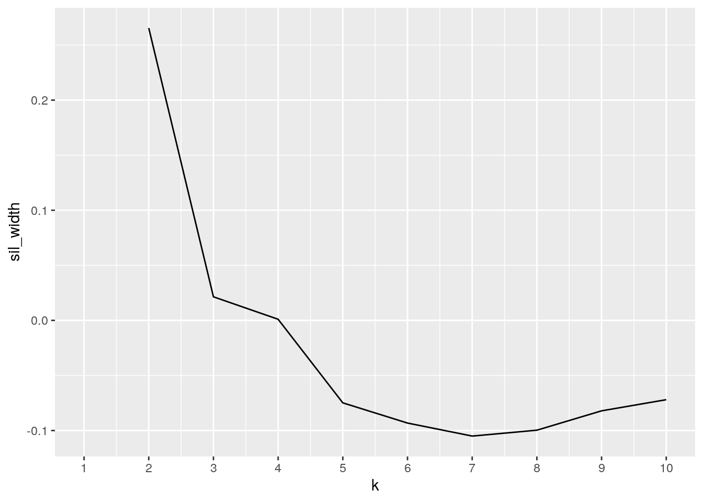

January 1, 0001
Data Wrangling and Data Exploration
0. Introduction
For my project, I decided to combine a dataset of global alcohol consumption and a dataset of global life expectancy, both containing data from the year 2010. The global alcohol consumption dataset contains the variables country and total liters of pure alcohol served, for each country. The life expectancy dataset contains the variables country, developed or developing status, life expectancy in age, and BMI, for each country. I found these datasets on Kaggle and decided it would be interesting to see if there was any correlation between the amount of alcohol consumed and life expectancy by country. One possible association that I expect to see is that the higher a country’s alcohol consumption, the lower the life expectancy; this seems like a logical correlation, but this relationship could be affected by whether the country is developed or developing, which I have included as a categorical variable. Another possible association I expect to see is that the higher a country’s alcohol consumption, the higher its BMI. Again, this seems like a logical correlation because consuming alcohol regularly or in large quantities can lead to weight gain.
1. Tidying: Rearranging Wide/Long
Prior to tidying my data, I imported the tidyverse package, dplyr package, and my two datasets into R. Data should be tidied in order to have each variable form its own column and each observation form a row; this makes the data more organized and easier to work with. Because my data was already tidy, I transformed my data from long to wide by piping my drinks (global alcohol consumption) dataset into the pivot_wider function. Then, to switch it back to the original format, I piped my wide drinks dataset into the pivot_longer function.
library(tidyverse)
library(dplyr)
library(readxl)
lifeex <- read_excel("lifeex.xlsx")
library(readxl)
drinks <- read_excel("drinks.xlsx")
wide_drinks <- drinks %>% pivot_wider(names_from = "country",
values_from = "total_litres_of_pure_alcohol")
long_drinks <- wide_drinks %>% pivot_longer(cols = c(1:158),
names_to = "country", values_to = "litres_of_pure_alcohol")
head(wide_drinks)## # A tibble: 1 x 193
## Afghanistan Albania Algeria Andorra Angola `Antigua & Barb… Argentina Armenia
## <dbl> <dbl> <dbl> <dbl> <dbl> <dbl> <dbl> <dbl>
## 1 0 4.9 0.7 12.4 5.9 4.9 8.3 3.8
## # … with 185 more variables: Australia <dbl>, Austria <dbl>, Azerbaijan <dbl>,
## # Bahamas <dbl>, Bahrain <dbl>, Bangladesh <dbl>, Barbados <dbl>,
## # Belarus <dbl>, Belgium <dbl>, Belize <dbl>, Benin <dbl>, Bhutan <dbl>,
## # Bolivia <dbl>, `Bosnia-Herzegovina` <dbl>, Botswana <dbl>, Brazil <dbl>,
## # Brunei <dbl>, Bulgaria <dbl>, `Burkina Faso` <dbl>, Burundi <dbl>, `Cote
## # d'Ivoire` <dbl>, `Cabo Verde` <dbl>, Cambodia <dbl>, Cameroon <dbl>,
## # Canada <dbl>, `Central African Republic` <dbl>, Chad <dbl>, Chile <dbl>,
## # China <dbl>, Colombia <dbl>, Comoros <dbl>, Congo <dbl>, `Cook
## # Islands` <dbl>, `Costa Rica` <dbl>, Croatia <dbl>, Cuba <dbl>,
## # Cyprus <dbl>, `Czech Republic` <dbl>, `North Korea` <dbl>, `DR
## # Congo` <dbl>, Denmark <dbl>, Djibouti <dbl>, Dominica <dbl>, `Dominican
## # Republic` <dbl>, Ecuador <dbl>, Egypt <dbl>, `El Salvador` <dbl>,
## # `Equatorial Guinea` <dbl>, Eritrea <dbl>, Estonia <dbl>, Ethiopia <dbl>,
## # Fiji <dbl>, Finland <dbl>, France <dbl>, Gabon <dbl>, Gambia <dbl>,
## # Georgia <dbl>, Germany <dbl>, Ghana <dbl>, Greece <dbl>, Grenada <dbl>,
## # Guatemala <dbl>, Guinea <dbl>, `Guinea-Bissau` <dbl>, Guyana <dbl>,
## # Haiti <dbl>, Honduras <dbl>, Hungary <dbl>, Iceland <dbl>, India <dbl>,
## # Indonesia <dbl>, Iran <dbl>, Iraq <dbl>, Ireland <dbl>, Israel <dbl>,
## # Italy <dbl>, Jamaica <dbl>, Japan <dbl>, Jordan <dbl>, Kazakhstan <dbl>,
## # Kenya <dbl>, Kiribati <dbl>, Kuwait <dbl>, Kyrgyzstan <dbl>, Laos <dbl>,
## # Latvia <dbl>, Lebanon <dbl>, Lesotho <dbl>, Liberia <dbl>, Libya <dbl>,
## # Lithuania <dbl>, Luxembourg <dbl>, Madagascar <dbl>, Malawi <dbl>,
## # Malaysia <dbl>, Maldives <dbl>, Mali <dbl>, Malta <dbl>, `Marshall
## # Islands` <dbl>, Mauritania <dbl>, …head(long_drinks)## # A tibble: 6 x 37
## Somalia `South Africa` Spain `Sri Lanka` Sudan Suriname Swaziland Sweden
## <dbl> <dbl> <dbl> <dbl> <dbl> <dbl> <dbl> <dbl>
## 1 0 8.2 10 2.2 1.7 5.6 4.7 7.2
## 2 0 8.2 10 2.2 1.7 5.6 4.7 7.2
## 3 0 8.2 10 2.2 1.7 5.6 4.7 7.2
## 4 0 8.2 10 2.2 1.7 5.6 4.7 7.2
## 5 0 8.2 10 2.2 1.7 5.6 4.7 7.2
## 6 0 8.2 10 2.2 1.7 5.6 4.7 7.2
## # … with 29 more variables: Switzerland <dbl>, Syria <dbl>, Tajikistan <dbl>,
## # Thailand <dbl>, Macedonia <dbl>, `Timor-Leste` <dbl>, Togo <dbl>,
## # Tonga <dbl>, `Trinidad & Tobago` <dbl>, Tunisia <dbl>, Turkey <dbl>,
## # Turkmenistan <dbl>, Tuvalu <dbl>, Uganda <dbl>, Ukraine <dbl>, `United Arab
## # Emirates` <dbl>, `United Kingdom` <dbl>, Tanzania <dbl>, USA <dbl>,
## # Uruguay <dbl>, Uzbekistan <dbl>, Vanuatu <dbl>, Venezuela <dbl>,
## # Vietnam <dbl>, Yemen <dbl>, Zambia <dbl>, Zimbabwe <dbl>, country <chr>,
## # litres_of_pure_alcohol <dbl>2. Joining/Merging
I joined my two datasets into one by using the dplyr inner-join function so that I would only keep the observations/countries that were present in both datasets in order to have a more cohesive final dataset. The inner join function allowed me to drop any row/country in either of the datasets that didn’t have a match; therefore, I only kept the observations/rows that had a match on the ID variables, being country in this case. I used the inner-join function over the full-join function as to not have any NAs introduced into my dataset. I used the length setdiff function and length intersect function in order to determine how many cases were dropped and from which dataset. There are 35 countries that appear in the global alcohol consumption dataset but not in the global life expectancy dataset, while there are 25 countries that appear in the global life expectancy dataset but not in the global alcohol consumption dataset. There were a total of 60 observations dropped between the two datasets, leaving 158 common observations/countries.
global <- inner_join(drinks, lifeex, by = c(country = "Country"))
length(setdiff(drinks$country, lifeex$Country))## [1] 35length(setdiff(lifeex$Country, drinks$country))## [1] 25length(intersect(drinks$country, lifeex$Country))## [1] 1583. Wrangling
Mutate
global2 <- (global %>% mutate(total_ounces_of_pure_alcohol = total_litres_of_pure_alcohol *
33.814))
head(global2)## # A tibble: 6 x 6
## country total_litres_of_pu… Status `Life expectanc… BMI total_ounces_of_p…
## <chr> <dbl> <chr> <dbl> <dbl> <dbl>
## 1 Afghani… 0 Develo… 58.8 16.7 0
## 2 Albania 4.9 Develo… 76.2 54.3 166.
## 3 Algeria 0.7 Develo… 74.7 53.9 23.7
## 4 Angola 5.9 Develo… 49.6 2.4 200.
## 5 Argenti… 8.3 Develo… 75.5 59.8 281.
## 6 Armenia 3.8 Develo… 73.5 51.2 128.Summarize Group_by Categorical, Mean
global %>% group_by(global$status) %>% summarize(mean_alchohol = mean(total_litres_of_pure_alcohol,
na.rm = T), mean_life = mean(`Life expectancy`, na.rm = T),
mean_BMI = mean(BMI, na.rm = T))## # A tibble: 1 x 3
## mean_alchohol mean_life mean_BMI
## <dbl> <dbl> <dbl>
## 1 4.68 69.9 38.4Filter, Select
lifeex_alcohol <- global %>% filter(total_litres_of_pure_alcohol >
mean(total_litres_of_pure_alcohol) | `Life expectancy` >
mean(`Life expectancy`))
lifeex_alcohol %>% select(country)## # A tibble: 111 x 1
## country
## <chr>
## 1 Albania
## 2 Algeria
## 3 Angola
## 4 Argentina
## 5 Armenia
## 6 Australia
## 7 Austria
## 8 Azerbaijan
## 9 Bahamas
## 10 Bahrain
## # … with 101 more rowsSummarize (without group_by), Median, Summarize Group_by Categorical, Arrange
global %>% summarize(median(total_litres_of_pure_alcohol))## # A tibble: 1 x 1
## `median(total_litres_of_pure_alcohol)`
## <dbl>
## 1 4.2global %>% group_by(Status) %>% summarize(median.alcohol = median(total_litres_of_pure_alcohol)) %>%
arrange(desc(median.alcohol))## # A tibble: 2 x 2
## Status median.alcohol
## <chr> <dbl>
## 1 Developed 10.3
## 2 Developing 2.5Summarize (without group_by), Filter, Max, Min, Select
global %>% summarize(max_life = max(`Life expectancy`))## # A tibble: 1 x 1
## max_life
## <dbl>
## 1 89global %>% filter(`Life expectancy` == 89) %>% select(total_litres_of_pure_alcohol)## # A tibble: 1 x 1
## total_litres_of_pure_alcohol
## <dbl>
## 1 9.3global %>% summarize(min_life = min(`Life expectancy`))## # A tibble: 1 x 1
## min_life
## <dbl>
## 1 36.3global %>% filter(`Life expectancy` == 36.3) %>% select(total_litres_of_pure_alcohol)## # A tibble: 1 x 1
## total_litres_of_pure_alcohol
## <dbl>
## 1 5.9Summarize (without group_by), Quantile
global %>% summarize(quantile(total_litres_of_pure_alcohol))## # A tibble: 5 x 1
## `quantile(total_litres_of_pure_alcohol)`
## <dbl>
## 1 0
## 2 1.3
## 3 4.2
## 4 7.2
## 5 14.4global %>% summarize(quantile(`Life expectancy`))## # A tibble: 5 x 1
## `quantile(\`Life expectancy\`)`
## <dbl>
## 1 36.3
## 2 63
## 3 72.8
## 4 75.9
## 5 89global %>% summarize(quantile(BMI, na.rm = T))## # A tibble: 5 x 1
## `quantile(BMI, na.rm = T)`
## <dbl>
## 1 2.2
## 2 19.8
## 3 44.2
## 4 57.6
## 5 75.2In the wrangling portion of this project, I started by first mutating the variable total_litres_of_pure_alchohol in order to convert these values to total_ounces_of_pure_alcohol to understand this variable from a different perspective, measurement wise. I created a new and separate dataset, “global2”, with the mutated variable, using the conversion of one liter being equal to 33.814 ounces. Using the head function, I observed the first five observations to get an idea of the conversion of alcohol volume. Next, using the pipe function with my joined dataset (“global”), I grouped the data by status of the country (developed or developing), then piped that into the summarize function to calculate the mean alcohol consumption (in liters), mean life expectancy, and mean BMI. The mean of total liters of pure alcohol was relatively low, most likely due to there being several countries that do not drink alcohol at all. Next, I created a new dataset, “lifeex_alcohol”, then piped my global dataset into the filter function based on two criteria: whether the country had an alcohol consumption greater than the mean consumption or a life expectancy greater than the mean life expectancy. Afterwards, I piped the new dataset into the select function to pull these observations by name of country to see which observations fit this criteria; there were 111 countries that fit either of the criteria listed in the filter.
I wanted to see how the mean alcohol consumption compared to the median alcohol consumption, so I piped my global dataset into a summarize function to find the median of that variable. The median was 4.2 liters, while the mean was 4.67 liters; these values are fairly close together, so my dataset has a somewhat symmetrical distribution, which I found interesting. Next, I piped my global dataset into a group_by function to group countries by status, then piped this into a summarize function to calculate the median alcohol consumption. Finally, I piped this into an arrange function to order the two groups by their median alcohol consumption in descending order. From this, I learned that developed countries have a higher median of alcohol consumption than developing countries, with 10.3 liters for the former and 2.5 liters for the latter. I then determined the max life expectancy from my dataset by piping the global dataset into a summarize function that calculates for max life expectancy; the max life expectancy out of my dataset is 89 years. Then, I piped my dataset into a function to filter only for the observation where life expectancy is 89; next, I piped this into a select function to show the column for total liters of pure alcohol. I did this to see if the country with greatest life expectancy had a lower or higher amount of alcohol consumption compared to the average; the value for this portion of code was 9.3 liters of pure alcohol, so the country with the highest life expectancy did drink more than the mean alcohol consumption. I followed this same process described for max life expectancy again, but instead, used min life expectancy this time. The country that had the lowest life expectancy in the dataset, 36.3 years, consumed 5.9 liters of pure alcohol; this was greater than the average alcohol consumption but lower than the amount consumed for country with max life expectancy. Finally, I used the summarize function three different times to calculate the quantile for total liters of pure alcohol, life expectancy, and BMI. Each time, I followed the same process by piping my global dataset into the summarize function, which would then calculate the quantile for my three different variables. For BMI, I had to include “na.rm=T” in my code because there was one NA in my observations.
4. Visualizing
Correlation Heatmap
corMatrix <- global %>% select_if(is.numeric) %>% cor(use = "pair")
tidycor <- corMatrix %>% as.data.frame %>% rownames_to_column("var1") %>%
pivot_longer(-1, names_to = "var2", values_to = "correlation")
tidycor %>% ggplot(aes(var1, var2, fill = correlation)) + geom_tile() +
geom_text(aes(label = round(correlation, 2)), color = "pink",
size = 3) + theme(axis.text.x = element_text(angle = 90,
hjust = 1)) + scale_fill_gradient2(low = "white", mid = "yellow",
high = "blue") + ggtitle("Correlation Heatmap")## Plots with ggplot
library(tidyverse)
library(ggplot2)
global %>% ggplot(aes(total_litres_of_pure_alcohol, `Life expectancy`,
color = Status)) + geom_point() + theme_dark() + ggtitle("Life Expectancy vs Global Alcohol Consumption") +
xlab("Alcohol Consumed (liters)") + ylab("Life Expectancy (years)") +
scale_x_continuous(breaks = round(seq(0, 15, 1))) + geom_point(size = 0.5,
alpha = 0.5)
ggplot(global, aes(x = BMI, y = total_litres_of_pure_alcohol,
color = BMI)) + geom_bar(stat = "summary", fun = mean, width = 1.5) +
facet_wrap(~Status) + ggtitle("Alcohol Consumption vs BMI (Faceted by Country Status)") +
xlab("BMI") + ylab("Alcohol Consumption (liters)")From looking at my correlation heatmap, there does not seem to be any two sets of variables in my dataset that have a particularly strong correlation. The variables with the highest correlation, 0.53, were life expectancy and BMI. It makes sense that these two variables have the highest correlation out of any combination of two variables in the dataset because BMI can be indicative of healthfulness. However, in reality, healthfulness is supported by many other variables, and BMI cannot stand alone, so it makes sense why the correlation between life expectancy and BMI can be described as moderate. The correlation between total liters of pure alcohol and BMI was the lowest, at 0.31. This value seems logical because alcohol consumption alone does not play a strong role in predicting BMI but can still have somewhat of an effect. The correlation between total liters of pure alcohol and life expectancy was similar in value to the previous correlation mentioned but a bit stronger, at 0.39. This value seems as logical as the correlation between total liters of pure alcohol and BMI; while alcohol consumption can impact life expectancy, it is not a variable that can stand alone. These correlation values on the heatmap all seem reasonable because while alcohol consumption and BMI and life expectancy all meet at some kind of intersection, there are endless variables as to what could affect BMI or life expectancy. Therefore, it makes sense that these correlation values were low to moderate.
I made a scatterplot portraying the relationship between life expectancy, in years, and pure alcohol consumed, in liters. Additionally, each observation’s country status, developed or developing, is portrayed by two different colors; the red points represent the developed countries, while the developing countries are represented by the blue points, as the legend on the side of the plot indicates. It seems that there is a somewhat positive correlation between life expectancy and alcohol consumed, meaning that the greater the amount of alcohol consumed in a country, the higher that country’s life expectancy. However, there are certain things to notice before coming to this conclusion prematurely. First of all, there are several outliers that stray from the seemingly positive relationship between the two variables. Additionally, there is a distinct separation between developing and developed countries; with the exception of a few outliers, the countries with longer life expectancies do tend to be developed nations. So, the trends depicted on this scatterplot may come as a surprise, but when taking the status of the country into consideration, it seems logical that the developed countries have both a greater life expectancy and higher amount of alcohol consumption. This could be due to the fact that developed countries have better living conditions compared to developing countries, thus explaining the greater life expectancy; also, perhaps developed countries have both more time and money to spend on alcohol consumption.
For my next plot, I decided to make a barplot comparing alcohol consumption, in liters, and BMI, faceted by country status. I was interested in seeing the breakdown between developed and developing countries and if there was any apparent relationship between BMI and alcohol consumption. I expected to see a pattern of lower BMIs in countries that consumed less alcohol or in developing countries in general. This trend does somewhat exist on the plot, with the exception of a few notable outliers. There are developed countries that have some of the highest alcohol consumption, but surprisingly, have significantly below average BMIs. This was surprising to me because while both living in a developed country and consuming large amounts of alcohol, I would expect to see BMIs greater than the average, but this is not the case. There was also the opposite case present in this plot: there were a few developing countries that did not consume much alcohol but had an above average BMI. Of course there are a plethora of factors that could affect a country’s BMI, but it was interesting to see the relationship between it and alcohol consumption, faceted by a country’s status.
5. Dimensionality Reduction
library(cluster)
pam_dat <- global %>% select(total_litres_of_pure_alcohol, `Life expectancy`)
sil_width <- vector()
for (i in 2:10) {
pam_fit <- pam(pam_dat, k = i)
sil_width[i] <- pam_fit$silinfo$avg.width
}
ggplot() + geom_line(aes(x = 1:10, y = sil_width)) + scale_x_continuous(name = "k",
breaks = 1:10)library(cluster)
pam1 <- global %>% select(total_litres_of_pure_alcohol, `Life expectancy`) %>%
pam(k = 2)
pamclust = global %>% mutate(cluster = as.factor(pam1$clustering))
pamclust %>% ggplot(aes(total_litres_of_pure_alcohol, `Life expectancy`,
color = cluster)) + geom_point()pamclust %>% group_by(cluster) %>% select(cluster, total_litres_of_pure_alcohol,
`Life expectancy`) %>% summarize_if(is.numeric, mean, na.rm = T)## # A tibble: 2 x 3
## cluster total_litres_of_pure_alcohol `Life expectancy`
## <fct> <dbl> <dbl>
## 1 1 2.88 59.0
## 2 2 5.61 75.6pam1$silinfo$avg.width## [1] 0.529551library(cluster)
pam_dat <- global %>% select(total_litres_of_pure_alcohol, BMI)
sil_width <- vector()
for (i in 2:10) {
pam_fit <- pam(pam_dat, k = i)
sil_width[i] <- pam_fit$silinfo$avg.width
}
ggplot() + geom_line(aes(x = 1:10, y = sil_width)) + scale_x_continuous(name = "k",
breaks = 1:10)
library(cluster)
pam1 <- global %>% select(total_litres_of_pure_alcohol, BMI) %>%
pam(k = 2)
pamclust = global %>% mutate(cluster = as.factor(pam1$clustering))
pamclust %>% ggplot(aes(total_litres_of_pure_alcohol, BMI, color = cluster)) +
geom_point()pamclust %>% group_by(cluster) %>% select(cluster, total_litres_of_pure_alcohol,
BMI) %>% summarize_if(is.numeric, mean, na.rm = T)## # A tibble: 2 x 3
## cluster total_litres_of_pure_alcohol BMI
## <fct> <dbl> <dbl>
## 1 1 3.24 32.0
## 2 2 9.36 59.1pam1$silinfo$avg.width## [1] 0.2654315For the dimensionality reduction portion of the project, I decided to perform a k-means/PAM clustering on the relationship between the variables total liters of pure alcohol and life expectancy, as well as total liters of pure alcohol and BMI. For my first cluster plot, I examined the clusters in total liters of pure alcohol vs life expectancy. From looking at the goodness-of-fit line, the greatest silhouette width is at k=2, so there are two clusters in my dataset. Looking at the two clusters in the relationship between total liters of pure alcohol and life expectancy, it is evident that cluster 2 has more occurrences of greater alcohol consumption, while also having better life expectancy than cluster 1. In cluster 1, the mean for total liters of pure alcohol is 2.88 liters, while the mean life expectancy is 59.00 years. In cluster 2, the mean for total liters of pure alcohol is 5.60 liters, while the mean life expectancy is 75.57 years. The average silhouette width is 0.53, which means that a reasonable structure has been found.
Next, I examined the clusters in total liters of pure alcohol vs BMI. From looking at my goodness-of-fit line, the greatest silhouette width is at k=2, so there are two clusters in my dataset. Looking at the two clusters in the relationship with these two variables, it appears that cluster 2 is a bit worse off, on average, than cluster 1. Cluster 2 has a more condensed spread and consumes an average to above average amount of alcohol, while having BMIs well above average. However, cluster 1 has a much more varied spread and is plotted all across the graph. In cluster 1, the mean for total liters of pure alcohol is 3.24 liters, while the mean BMI is 31.98. In cluster 2, the mean for total liters of pure alcohol is 9.36 liters, while the mean BMI is 59.12. The average silhouette width is 0.26, which means the structure is weak and could be artificial.
Instructions
A knitted R Markdown document (ideally HTML) and the raw R Markdown file (as .Rmd) should both be submitted to Canvas by 11:59pm on the due date. These two documents will be graded jointly, so they must be consistent (i.e., don’t change the R Markdown file without also updating the knitted document).
The text of the document should provide a narrative structure around your code/output. All results presented must have corresponding code. Any answers/results/plots etc. given without the corresponding R code that generated the result will not be considered. Furthermore, all code contained in your final project document must work correctly (knit early, knit often)! Please do not include any extraneous code or code which produces error messages. (Code that produces warnings is acceptable, as long as you understand what the warnings mean!)
Find data:
Find two (!) datasets with one variable in common (e.g., dates, times, states, counties, countries, sports players), both with at least 50 observations (i.e., rows) in each. Please think very carefully about whether it makes sense to combine your datasets! If you find one dataset with 50 patients and it has their age, and you find another dataset with 50 different patients that has their ages, it makes no sense to join them based on age (you would just be pairing up random people of the same age).
When combined, the resulting/final dataset must have at least 4 different variables (at least 3 numeric) in addition to the common variable (i.e., five variables total).
You can have as many variables as you would like! If you found two datasets that you like but they don’t have enough variables, find a third dataset with the same common variable and join all three.
Guidelines
If the datasets are not tidy, you will need to reshape them so that every observation has its own row and every variable its own column. If the datasets are both already tidy, you will make them untidy with
pivot_wider()/spread()and then tidy them again withpivot_longer/gather()to demonstrate your use of the functions. It’s fine to wait until you have your descriptives to use these functions (e.g., you might want to pivot_wider() to rearrange the data to make your descriptive statistics easier to look at); it’s fine long as you use them at least once!Depending on your datasets, it might be a good idea to do this before joining. For example, if you have a dataset you like with multiple measurements per year, but you want to join by year, you could average over your numeric variables to get means/year, do counts for your categoricals to get a counts/year, etc.
If your data sets are already tidy, demonstrate the use of
pivot_longer()/gather()andpivot_wider()/spread()on all or part of your data at some point in this document (e.g., after you have generated summary statistics in part 3, make a table of them wide instead of long).
Join your 2+ separate data sources into a single dataset based on a common ID variable! If you can’t find a good pair datasets to join, you may split one main dataset into two different datasets with a common ID variable in each, and then join them back together based on that common ID, but this is obviously less than ideal.
- You will document the type of join that you do (left/right/inner/full), including a discussion of how many observations were in each dataset, which observations in each dataset were dropped (if any) and why you chose this particular join.
Create summary statistics
Use all six core
dplyrfunctions (filter, select, arrange, group_by, mutate, summarize) to manipulate and explore your dataset. For mutate, create a new variable that is a function of at least one other variable, preferably using a dplyr vector function (see dplyr cheatsheet). It’s totally fine to use the_if,_at,_allversions of mutate/summarize instead (indeed, it is encouraged if you have lots of variables)Create summary statistics (
mean, sd, var, n, quantile, min, max, n_distinct, cor, etc) for each of your numeric variables both overall and after grouping by one of your categorical variables (either together or one-at-a-time; if you have two categorical variables, try to include at least one statistic based on a grouping of two categorical variables simultaneously). If you do not have any categorical variables, create one using mutate (e.g., withcase_whenorifelse) to satisfy thegroup_byrequirements above. Ideally, you will find a way to show these summary statistics in an easy-to-read table (e.g., by reshaping). (You might explore the kable package for making pretty tables!) If you have lots of numeric variables (e.g., 10+), or your categorical variables have too many categories, just pick a few (either numeric variables or categories of a categorical variable) and summarize based on those. It would be a good idea to show a correlation matrix for your numeric variables (you will need it to make one of your plots).
Make visualizations (three plots)
- Make a correlation heatmap of your numeric variables
- Create at least two additional plots of your choice with ggplot that highlight some of the more interesting features of your data.
- Each plot (besides the heatmap) should have at least three variables mapped to separate aesthetics
- Each should use different geoms (e.g., don’t do two geom_bars)
- At least one plot should include
stat="summary" - Each plot should include a supporting paragraph describing the relationships that are being visualized and any trends that are apparent
- It is fine to include more, but limit yourself to 4. Plots should avoid being redundant! Four bad plots will get a lower grade than two good plots, all else being equal.
- Make them pretty! Use correct labels, etc.
Perform k-means/PAM clustering or PCA on (at least) your numeric variables.
Include all steps as we discuss in class, including a visualization.
If you don’t have at least 3 numeric variables, or you want to cluster based on categorical variables too, convert them to factors in R, generate Gower’s dissimilarity matrix on the data, and do PAM clustering on the dissimilarities.
Show how you chose the final number of clusters/principal components
Interpret the final clusters/principal components
For every step, document what your code does (in words) and what you see in the data!
Rubric
Prerequisite: Finding appropriate data from at least two sources per the instructions above: Failure to do this will result in a 0! You will submit a .Rmd file and a knitted document (html/pdf).
0. Introduction (5 pts)
- Write a narrative introductory paragraph or two describing the datasets you have chosen, the variables they contain, how they were acquired, and why they are interesting to you. Expand on potential associations you may expect, if any.
1. Tidying: Rearranging Wide/Long (10 pts)
- Tidy the datasets (using the
tidyrfunctionspivot_longer/gatherand/orpivot_wider/spread) - If you data sets are already tidy, be sure to use those functions somewhere else in your project (e.g., for rearranging summary statistics)
- Document the process (describe in words what was done)
2. Joining/Merging (10 pts)
- Join your datasets into one using a
dplyrjoin function - If you have multiple observations on the joining variable in either dataset, fix this by collapsing via summarize
- Discuss the process in words, including why you chose the join you did
- Discuss which cases were dropped, if any, and potential problems with this
3. Wrangling (40 pts)
- Use all six core
dplyrfunctions in the service of generating summary tables/statistics (12 pts)- Use mutate at least once to generate a variable that is a function of at least one other variable
- Compute summary statistics for each of your variables using
summarizealone and withgroup_by(if you have more than 10 variables, fine to just focus on 10) (20 pts)- Use at least 5 unique functions inside of summarize (e.g., mean, sd)
- For at least 2, use summarize after grouping by a categorical variable. Create one by dichotomizing a numeric if necessary
- If applicable, at least 1 of these should group by two categorical variables
- Summarize the procedure and discuss all (or the most interesting) results in no more than two paragraphs (8 pts)
4. Visualizing (30 pts)
Create a correlation heatmap of your numeric variables the way we did in class
Create two more effective, polished plots with ggplot
- Each plot should map 3+ variables to aesthetics
- Each plot should have a title and clean labeling for all mappings
- Change at least one default theme element and color for at least one mapping per plot
- For at least one plot, add more tick marks (x, y, or both) than are given by default
- For at least one plot, use the stat=“summary” function
- Supporting paragraph or two (for each plot) describing the relationships/trends that are apparent
5. Dimensionality Reduction (30 pts)
Either k-means/PAM clustering or PCA (inclusive “or”) should be performed on at least three of your variables (3 is just the minimum: using more/all of them will make this much more interesting!)
- All relevant steps discussed in class (e.g., picking number of PCs/clusters)
- A visualization of the clusters or the first few principal components (using ggplot2)
- Supporting paragraph or two describing results found, interpreting the clusters/PCs in terms of the original variables and observations, discussing goodness of fit or variance explained, etc.
6. Neatness, Holistic/Discretionary Points (5 pts)
- Keep things looking nice! Your project should not knit to more than 30 or so pages (probably closer to 10-20)! You will lose points if you print out your entire dataset(s), have terrible formatting, etc. If you start your project in a fresh .Rmd file, you are advised to copy set-up code below and include it: this will do things like automatically truncate if you accidentally print out a huge dataset, etc. Imagine this is a polished report you are giving to your PI or boss to summarize your work researching a topic.
## paste this chunk into the ```{r setup} chunk at the top of
## your project 1 .Rmd file
knitr::opts_chunk$set(echo = TRUE, eval = TRUE, fig.align = "center",
warning = F, message = F, tidy = TRUE, tidy.opts = list(width.cutoff = 60),
R.options = list(max.print = 100))Where do I find data?
OK, brace yourself!
You can choose ANY datasets you want that meet the above criteria for variables and observations. I’m just sitting here but off the top of my head, if you are into amusement parks, you could look at amusement-park variables, including ticket sales per day etc.; then you could join this by date in weather data. If you are interested in Game of Thrones, you could look at how the frequency of mentions of character names (plus other character variables) and the frequency of baby names in the USA…You could even take your old Biostats data and merge in new data (e.g., based on a Google forms timestamp).
You could engage in some “me-search”: You can request your Spotify data or download Netflix viewing activity, Amazon purchase history, etc. You can use your Google Fit/Fitbit/Apple watch data, etc. These can be combined (e.g., with each other, with other data sources).
You can make it as serious as you want, or not, but keep in mind that you will be incorporating this project into a portfolio webpage for your final in this course, so choose something that really reflects who you are, or something that you feel will advance you in the direction you hope to move career-wise, or something that you think is really neat. On the flip side, regardless of what you pick, you will be performing all the same tasks, so it doesn’t end up being that big of a deal.
If you are totally clueless and have no direction at all, log into the server and type
data(package = .packages(all.available = TRUE))This will print out a list of ALL datasets in ALL packages installed on the server (a ton)! Scroll until your eyes bleed! Actually, do not scroll that much… To start with something more manageable, just run the command on your own computer, or just run data() to bring up the datasets in your current environment. To read more about a dataset, do ?packagename::datasetname.
If it is easier for you, and in case you don’t have many packages installed, a list of R datasets from a few common packages (also downloadable in CSV format) is given at the following website: https://vincentarelbundock.github.io/Rdatasets/datasets.html (including types/numbers of variables in each)
A good package to download for fun/relevant data is
fivethiryeight. Just runinstall.packages("fivethirtyeight"), load the packages withlibrary(fivethirtyeight), rundata()`, and then scroll down to view the datasets. Here is an online list of all 127 datasets (with links to the 538 articles). Lots of sports, politics, current events, etc: https://cran.r-project.org/web/packages/fivethirtyeight/vignettes/fivethirtyeight.htmlIf you have already started to specialize (e.g., ecology, epidemiology) you might look at discipline-specific R packages (vegan, epi, respectively). We will be using some tools from these packages later in the course, but they come with lots of data too, which you can explore according to the directions above
However, you emphatically DO NOT have to use datasets available via R packages! In fact, I would much prefer it if you found the data from completely separate sources and brought them together (a much more realistic experience in the real world)! You can even reuse data from your SDS328M project, provided it shares a variable in common with other data which allows you to merge the two together (e.g., if you still had the timestamp, you could look up the weather that day: https://www.wunderground.com/history/). If you work in a research lab or have access to old data, you could potentially merge it with new data from your lab!
Here is a curated list of interesting datasets (read-only spreadsheet format): https://docs.google.com/spreadsheets/d/1wZhPLMCHKJvwOkP4juclhjFgqIY8fQFMemwKL2c64vk/edit
Here is another great compilation of datasets: https://github.com/rfordatascience/tidytuesday
Here is the UCI Machine Learning Repository: https://archive.ics.uci.edu/ml/index.php
Here is another good general place to look: https://www.kaggle.com/datasets
To help narrow your search down or to see interesting variable ideas, check out https://www.tylervigen.com/spurious-correlations. This is the spurious correlations website, and it is fun, but if you look at the bottom of each plot you will see sources for the data. This is a good place to find very general data (or at least get a sense of where you can scrape data together from)!
If you are interested in medical data, check out www.countyhealthrankings.org
If you are interested in scraping UT data, the university makes loads of data public (e.g., beyond just professor CVs and syllabi). Check out all the data that is available in the statistical handbooks: https://reports.utexas.edu/statistical-handbook
Broader data sources:
Data.gov 186,000+ datasets!
Social Explorer is a nice interface to Census and American Community Survey data (more user-friendly than the government sites). May need to sign up for a free trial.
U.S. Bureau of Labor Statistics
Gapminder, data about the world.
…